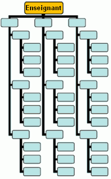
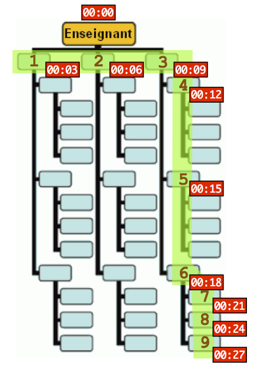

|
Lorsqu'il a un message à annoncer à ses 39 élèves, l'enseignant de la classe de Castor appelle trois des élèves l'un après l'autre. Chacun d'eux appelle à son tour trois élèves l'un après l'autre, et ces derniers appellent alors également trois élèves chacun. Les appels sont représentés sur l'illustration ci-contre. Chaque appel dure trois minutes exactement, et dès qu'un élève a reçu un appel de son enseignant ou d'un autre élève, il commence immédiatement à appeler les élèves qu'il doit contacter. Déterminez combien de temps s'écoule entre le moment où l'enseignant commence son premier appel téléphonique pour annoncer un message, et le moment où le tout dernier élève a fini de recevoir le message. |  |
Réponse B.
|
Parmi les trois élèves contactés par l'enseignant, le troisième (case numéro 3 sur la figure ci-contre) ne pourra lui même commencer à appeler d'autre camarades qu'après 9 minutes (3+3+3), le temps que les 3 appels de l'enseignant aient eu lieu. L'élève numéro 3 peut alors commencer ses 3 appels consécutifs. Les appels des élèves numéro 1 et 2 ont alors déjà commencé : ils sont en avance. Les appels de l'élève numéro 3 se terminent 9 minutes plus tard, soit 18 minutes après le démarrage. L'élève 6 peut alors effectuer ses 3 appels (les élèves numéro 4 et 5 ont alors déjà commencé leurs propres appels). Cela rajoute 9 minutes. On obtient ainsi un total de 27 minutes. |  |
Dans ce problème, nous avons plusieurs actions qui doivent être effectuées (des appels téléphoniques). Chacune a un certain coût (le temps que la communication va prendre) et certaines actions ont des dépendances vis à vis d'autres ; par exemple le numéro 3 ne peut appeler le numéro 4 que si l'action "l'enseignant appelle le numéro 3" est terminée. Nous cherchons donc le temps minimal qu'il faudra pour effectuer toutes ces actions en respectant leurs dépendances. C'est un problème standard en informatique.